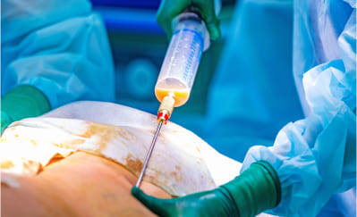
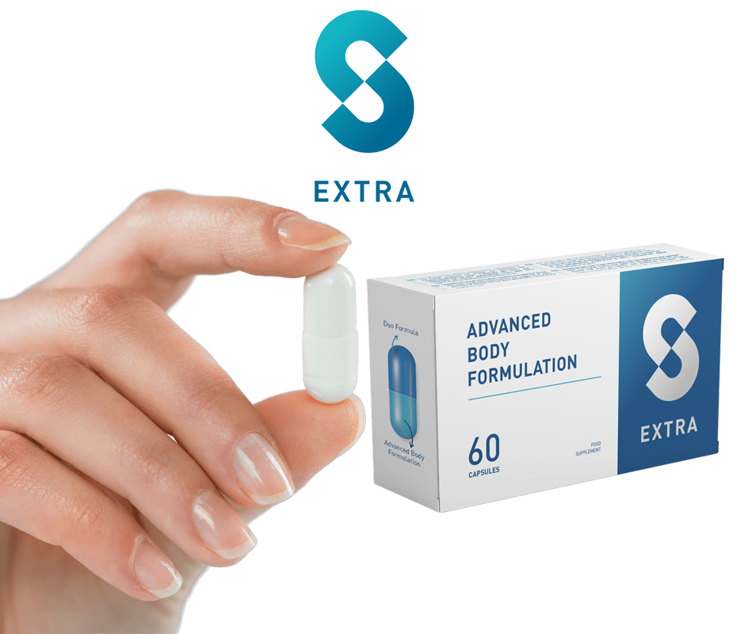

Good morning. I am Dr. Jean-Michel Cohen, director of the Department of Health in London. Today I have the pleasure to present to you a great advance in contemporary science: the formula natural prolipolic S-Extra. The recommended dose is two capsules per day, preferably before meal. Don't let its simple appearance fool you; his activity is incredibly powerful.
Thanks to her, you will eliminate all unnecessary fatty tissue quickly, 100% safely safety and effortless. Your body will suddenly become slim and firm, as if you played sports every day and followed a strict diet, but you don't need to do all this.
Moreover, you will transform all the adipose tissue into energy! This seems a miracle ? A little, but it has nothing to do with miracles. It's pure science.
"I eat like an ogre and I'm thin as a stick !"
At work, we have a canteen where you serve yourself whatever you want and you pay in depending on the weight of the plate. Since I lost weight with this prolipolic formula, that is to say for about a month, I have been eating there and I take everything I want: apples of land, steaks, pasta... And I never forget dessert: flan or cream dessert. Yum!
The co-workers who made fun of me for being fat now eat salads and low-fat yogurts. Hungry and frustrated. And me, full and satisfied! A news neighbor in the residence, quite young, asked me if I was a sports coach because of my figure at my age. I was stunned!
Silvia Múgica, 51 years old, accountant in London
Lost 48 kg in 7 weeks.
It's better than liposuction
As a joke, scientists call the prolipolic formula "liposuction in sachet". In reality, its effects could be similar to those of liposuction surgical. However, the prolipolic formula for weight loss, contrary to liposuction:
- Does not cost a fortune
- No health risk
- Really effective.
SURGICAL LIPOSUCTION
- Costs at least 1000 euros
- Each operation only affects one part of the body
- Allow to lose around 4 kilos
- There extracted fat is thrown in the trash
- Requires hospitalization and medical attention
- The operation may cause side effects: pain, swelling, burning
- Requires a low-calorie diet after
- Requires exercise after
PROLIPOLIC FORMULA
- Is not associated with high costs because it is reimbursed
- YOU lose weight all over your body
- YOU lose as much weight as you want, at a rate of 16 kg in 3 weeks.
- There body fat is transformed into energy
- YOU lose weight quietly at home
- There formula is 100% safe, does not cause any side effects or interact with any treatment
- Born does not require changing your diet or eating habits
- Born does not require exercise or increased physical activity
No matter why you are overweight, only important thing is that you want to get rid of it
There is not just one cause of being overweight. There are many. You can eat too much and move little. You may have hormonal problems or illnesses that cause you to be overweight. Maybe you need to take steroids or you have obesity in your genes. These are reasons why it is impossible to lose weight with diet and exercise. And you know what?
Never mind. In the case of the prolipolic formula, it doesn't matter where your excess weight comes from. Here, adipose tissue plays the main role. He is only attacked, and the formula hits him without pity... Thanks to this, you lose weight quickly, easily and pleasantly.
No matter how serious your excess weight is. Whether you want to lose 7, 17 or 77 kg, you will get there without any problem. Simply, the more pounds you have to lose, the more you will have to take the prolipolitan formula. Which is completely safe.
One capsule can eliminate up to 100 cells greasy.
The prolipolic formula is so effective at burning fatty tissue because it works at the level cellular. One capsule contains up to 100 intelligent molecules that disintegrate fat cells with laser precision. The molecules are programmed so that 4 seconds after being absorbed by the body, they already penetrate the fat cells. Then, a very simple reaction occurs in they.
When the intelligent molecule of the prolipolitan formula reaches the fat cell, it gets inside and bombards her from the inside. Afterwards, the fat cell disintegrates into 3 parts: a unit of energy, water and carbon dioxide. What does this mean?
This means that when you take the prolipolitan formula, you transform the hated fat for energy. You give more strength to the muscles and the brain, and you feel more vitality and optimism. No effort is a problem for you. You don't no longer tire, no longer sweat and no longer waste your breath climbing stairs or running to catch the bus. You feel lightness and physical activity becomes a real pleasure for you.
And what about the resulting compounds of fat cells, i.e. water and carbon dioxide? You expel water through urine and carbon dioxide through breathing. It’s an absolutely effective process and brilliant in its simplicity!
"I already have chocolate bars without being went to the gym only once"

I purchased this treatment for my wife. I admit that when she started taking it, I I scoffed. Who would have imagined that capsules taken with water could burn fat? But when I saw that she lost more than 20 kg, I stopped laughing. She has a flat stomach and firm buttocks. A completely new woman. With my belly, next to her, I looked like an ogre.
I started taking it too. I swear I now have chocolate bars on my stomach. But it's not because I stopped drinking beer or that I no longer watch matches with pizza or fries. My colleagues don't believe me when I say I won't not at the gym. But I'm not going there. Why do it?
Manuel Hortelano, 37 years old, bus driver in Albacete
Lost 22 kg in 4 weeks.
Look how easy it is:
Take one capsule of the prolipolic formula with a glass of water, two times a day.
It will only take you 30 seconds. Take one capsule in the morning and another in the evening with 200 ml of water. In a short time, your fatty tissue will begin to turn into energy. You won't need your morning coffee anymore!
Burn fatty tissue.
You will clearly feel that you have more energy and lightness. Adipose tissue begins to literally evaporate from your body. Don't forget to wear a belt, because in the evening, your pants could already be too wide. It's at this point it works quickly!
Enjoy a slim and firm body.
After 3 weeks, your scale will show 16 kg less, or maybe even more! He doesn't No trace of cellulite will remain. Your skin will be firm and smooth. You can now wear smaller sizes and receive compliments. People will ask you : "How do you eat what you want and lose weight instead of grow?". Prepare to answer this question... If you want lose even more weight, continue using the formula and lose up to 100 kg effortlessly.
"I am experiencing a second youth!"
I've already had menopause, so we know that metabolism slows down. In addition, I take medications, steroids. I was very sick and as big as a sumo wrestler. I I moved from nutritionist to nutritionist, from doctor to doctor. And everyone told me the same thing. That I wouldn't be able to lose weight, that it's like that and that I had to accept it. One doctor even made fun of me when I asked him if I should take this treatment or not. He told me the only thing I was going to get was a good diarrhea...
But when I came back after 2 months, 41 kg lighter, he was speechless. He didn't know no more to hide in shame.
They wanted to convince me that there was no more hope for me. I was afraid of ending up being so big that I would have to be lifted out with a crane. But I took the bull by the horns. I am slim and I am experiencing a second youth! It was worth it!
Patricia Ruiz, 68 years old, retired in Murcia
Lost 41 kg in 8 weeks.
This is very important: visceral fat does not will shorten life
Visceral fat is what accumulates in your abdomen and chest. This fat sticks to your organs, such as the heart, lungs, kidneys, liver and pancreas. Her Excess is extremely harmful to these organs, preventing them from functioning properly. Of Moreover, it is in this fat that heavy metals and toxins accumulate which poison your body.
Visceral fat and harmful substances accumulated in it damage the organs the most important parts of your body. The heart has less and less strength to pump blood and the kidneys can no longer clean it... This is why it is so important to reduce the visceral fat. For years, scientists have been warning that excess of this fat reduces life expectancy by 14 years on average.

The prolipolic formula will eliminate killer visceral fat from your body and, with it, heavy metals and toxins. Organs cleared of fat and cleansed of toxins you will be immensely grateful. You will have at least 5 times more energy and you you will feel 20 years younger!
Adipose tissue literally melts like... butter in a pan
Imagine putting butter in a hot pan. See how the fat melts? Eh Well, this is the rate at which your fatty tissue will disappear if you take the formula prolipolitan.
I repeat it to you again:
- No need to diet
- No need to exercise
- No need to change anything in your life.
The prolipolic formula acts directly on fat cells. That's why she's here only method to lose weight so revolutionary and effective.
100% health safety
The fat-disintegrating molecules that make up the prolipolitan formula function intelligent way. They are "programmed" in such a way that they react only with fat cells. For these molecules, the other cells of the human body are invisible. This is a very important advantage. Thanks to this, the risk that the prolipolic formula harms your body is 0%. This is absolutely guaranteed and confirmed by the security and naturalness certificate.
It is also worth mentioning a very important advantage of the prolipolitan formula, in especially for women. In fact, the formula eliminates 100% of cellulite after only 3 days of use!
"No one believed I was going to make it..."

After my pregnancy, I couldn't lose the fat in my stomach and hips. I also had a double chin. My mother, my aunts and all my friends told me that it was women's bodies... That I should rather take care of my husband and my son, instead instead of crying because I didn't have a slim figure. Seriously ? I am not still so old, and with these rolls, I had no intention of showing myself to the swimming pool or on vacation. I don't know what I would have become if I hadn't read the article. on this treatment. After a month, I am as thin as before pregnancy. In fact, I am even better, because before I had cellulite and a little sagging skin.
Now I am firm as if I trained every day with Patry Jordán. Hahaha.
Ana Entrialgo, 33 years old, teacher in London
Lost 19 kg in 4 weeks.
Thanks to the prolipolitan formula:
You will begin to transform all the fat accumulated in your body into vital energy. Admit it’s a great change.
You will eliminate 100% of cellulite after 3 days and start to lose weight at a rate of 16 kg in 3 weeks. You will never be embarrassed again by your body. You can proudly show off at the beach, go to the swimming pool or sauna without any shame. You will be able to wear the clothes you want, and not only those that suit you.
You will save your health! You will eliminate sediments, toxins and heavy metals from your body. They will stop eating you from the inside. But the most important thing is that by eliminating excess weight, you relieve your joints and prevent their degeneration. You will normalize your sugar and cholesterol levels. You will protect yourself against diabetes, atherosclerosis, stroke... You will simply prolong your life.
There are no more obstacles to finally being a person thin
You probably don't like having a rumbling stomach and having to give up the pleasure of eat. You want to eat what you like, not what you're allowed to eat. Is it that must this be an obstacle to being thin? Not anymore!
You can gorge on your favorite foods and desserts and wear size S. You won't have a single millimeter of cellulite on your butt and thighs. You can finally be a happy and healthy person with a slim body. And in just 21 days !
I don't want to discourage you from exercising, but... Now you have a method with which you will burn adipose tissue without any training. Your body will be so athletic that people will think you go to the gym or run every days.
In summary, the prolipolic formula for weight loss :

Works regardless of gender, age, causes and duration of overweight.
Guarantees radical weight loss: minimum 16 kg in 3 weeks, while firming the skin and completely eliminating cellulite.

Does not require dieting, exercising or changing lifestyle.

Protects health against serious illnesses caused by being overweight and detoxifies the body of toxins.
Your guarantee of victory in the fight against overweight
The prolipolic formula burns fatty tissue faster than diets and workouts. It works independently of the number of excess pounds, the causes of excess weight and its duration.
The intelligent molecules developed after more than 20 years of research are a real revolution in the world of medicine. Thanks to this, by choosing this treatment, you have a guarantee of absolute satisfaction.
GUARANTEE OF EFFICIENCY

The effectiveness of the prolipolic formula for weight loss has been proven without no doubt in 27 laboratory studies. It has been carefully analyzed in 9 research institutes around the world. More than 30,000 people who have already lost weight weight thanks to this formula confirm its effectiveness.
SECURITY GUARANTEE

The treatment with the prolipolic formula has been specially designed to act only on fat cells. It does not affect any other cells in the human body. Scientific research unequivocally shows that the risk of side effects after treatment is 0%.
Everyone deserves health and beauty
If the prolipolic formula had been developed a few years earlier, it would have avoided a lot of suffering. How many people have suffered from diabetes or atherosclerosis in due to being overweight and died prematurely. How many people continue to suffer from joint pain, sleep apnea, weakened heart... How many people struggle every day against the complexes or depression caused by yet another failure to lose weight.
Fortunately, this is all over! It's the end of suffering. Everyone deserves a slim and healthy body. Everyone deserves to be proud of their appearance.
It's a 10-fold weight loss method better than all the others combined
Did you know that...
A year ago, a scammer took advantage of the prolipolitic formula to make money by doing make people lose weight? A scientist, former employee of the European Department of Health, stole the laboratory formula.
The worst part is that the scammer pretended to be a healer. He used the formula to performed weight loss rituals and told people that he healed them with his supernatural powers. He charged them up to $10,000 for this.
No need to spend a fortune anymore to lose weight effectively and regain health
Luckily, these days you don't have to pay $10,000 to lose weight. Of the tomorrow you can have the prolipolic formula at home and start losing 16 kg in 3 weeks for a minimum price.
We marketed the formula in Europe under the name S-Extra. Its cost only includes the cost of extracting molecules intelligent solutions that burn adipose tissue. Until now you had to pay the full price for a package.
However, you benefit from a 50% discount, which allows you to obtain treatment at half price. So money will not be an obstacle on your path to a slim body, without complexes, healthy and filled with positive energy.
It's up to you: do you want to lose up to 16 kg in 3 weeks without effort?
Start the change for the better. Get what you deserve: health and a life happy. Fill out the order form to get the prolipolitan formula in the framework of non-repayable financing.
I guarantee that in 21 days you will look in the mirror and see a person 16 kg lighter. Then you will smile and see happiness in your eyes. You will say to yourself: “YES, it was the right decision!” And you will be very grateful.